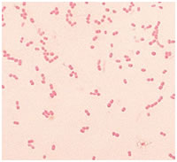
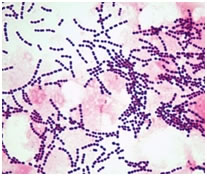
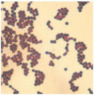
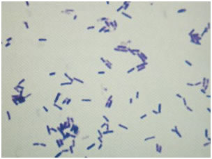
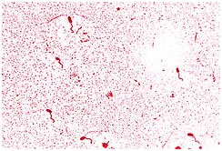
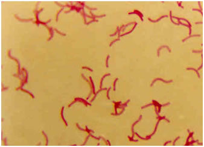
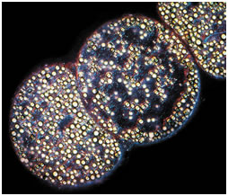
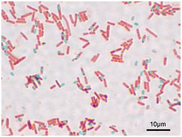

Cell Organization and Sub Cellular Structure Studies (Prokaryotic and Eukaryotic)
Light microscopic examination of the cells requires fixing and staining of the cells prior to observation. These processes can increase the visibility and clarity of the cell under study.
Fixation
Fixation is the process by which internal and external structures of a cell are preserved. Cell should not undergo any change in its state during the process of staining and observation. To ensure this, it is necessary to toughen the cell and to stop any chemical reaction that might take place within the cell that is the cell should be fixed at its current state. Based on the method of fixation a microscopic slide might be used for longer or shorter period of time or used as temporary or permanent slides. Even when great care is taken to fix the cells properly sometimes artifacts might be produced. Fixation step must therefore be standardized. The procedure for fixation varies with the fixative and the type of tissue or cell under study.
There are 2 types of fixations.
Heat fixation:
This helps to preserve the overall morphology of a cell. This is commonly used in smear preparation and preparation of temporary slides.
Chemical fixation:
In this method chemicals are used to preserve fine cellular substructures and morphology of more delicate microorganism. The chemicals used for fixation are known as fixative. A fixative might either stop any internal biochemical processes that take place within a cell, protect the cell from external damage or might increase the mechanical strength and stability. Chemical fixatives are commonly used in preparation of permanent slides.
Staining
The sample under examination is called the specimen. Specimen preparation is an important step in light microscopic examination of a given sample. Light microscopy can reveal better details if the different parts of the cell are given different color. This process of coloring a cell is called staining and the compounds that are used to color cells are termed stains or dye.
Staining is usually done to enhance the contrast of a cell. This helps to highlight the structure under the study of interest. Staining technique used in light microscopy will vary with the objective of study. If the objective of the study is to observe the cell structure and size, staining the cell with any stain that is taken up by the cell will do. But if the objective is to study a particular cell structure, then depending on the requirement two or more stains may be used to differentiate the structure from the surrounding cytoplasm. Staining technique that uses a single stain is called simple staining and the one which uses more than one stain is called differential staining.
The compounds that are used as stain contain two important features.
A chromophore that gives color to the compound.
The dye that binds to the cell either through covalent bonds or ionic bonds or through hydrophobic bonds.
Ionizable dyes are classified into.
Basic dye (having positive charged groups binding to the negatively charged structure.) E.g.: Methylene blue.
Acidic dye (having negatively charged group binding to the positively charged cell structures.)
E.g.: Eosin, acidic fuchsin. The effectiveness of these dye varies with the pH. An example of a dye that stains due to formation of double bond is Schiff's reagent that covalently attaches to deoxyribose.
Staining can be done by simply immersing the sample in the stain. The actual staining process involves immersing the sample in dye which is then followed by rinsing and observation. Sometimes additional step such as heating might be required. Many dyes require the use of a mordant. Mordant are chemical compounds that form an insoluble precipitate with the stain. These chemicals are mainly used to intensify the color given by the cell.
Commonly used stains to study the prokaryotic cell.
• Crystal violet: to study the cell size and morphology.
• Safranin: to study the cell size and cell morphology.
• Malachite green: to observe the endospore.
• Methylene blue: to study the cell size and cell structure.
• Albert stain (toluidine blue, malachite green glacial acetic acid 95% alcohol and distilled water)-stain metachromatic granules.
• Indian ink: to observe the capsule that is seen as an unstained halo around the organism.
Steps Involved in Specimen Preparation
The major step involved in specimen preparation is bacterial smear preparation and staining. The bacterial smear is a dried preparation of bacterial cells on a glass slide. The purpose of making bacterial smear is to fix them onto the glass slide. A bacterial smear is prepared on a clean glass slide and is prepared from bacteria that have grown on nutrient agar medium. These are then heat fixed in flame so that the bacterial cells adhere to the glass slide and does not run along with stain when excess stain is being washed. The smear should not be very thick as thicker smears are more difficult to observe and take longer time to dry. The smear should not be too thin as thinner smear will not contain sufficient number of bacteria to examine under the microscope. The smear should be an even one. Otherwise, the cells will be clumped at one portion of the smear and the other portion there will be insufficient cells for observation. There should only be one smear per glass slide. It is easier to prepare a smear from a solid sample than from a liquid sample. Smear adheres to the glass slide when it is heat fixed which is done by waving it over a flame. Heat fixation should only be done after completely drying the smear in air. Too much heating can lead to damage of the cell wall. Then the required stain is placed on the smear and washed away after a suitable time period of exposure. Sometimes a mordant might be added to enhance the coloring of the cell. When studying certain cell structures an additional step like heating might be required to facilitate the entry of stain into that component.
The experiment illustrated here in this section is simple staining. Simple staining is one amongst the easiest staining procedure and is mainly done to study the morphology, arrangement and appearance of bacterial cells. The principle behind simple staining is very simple. The basic dyes such as crystal violet, Methylene blue have a positive charge and enhance can very easily stain the negatively charged cells. Based upon the dye used the time of exposure to the dye should be varied.
Methylene blue - 1 minute, Crystal violet -1 minute, Carbol fuchsin - 20 seconds. The excess stain is then washed off, blot dried and observed under a microscope.
Prokaryotic cell Structures that are Visible through Light microscope
The maximum magnification that can be obtained from a light microscopy is 1000x or 1500x and the maximum resolution is 0.2μm. Hence only a very few details can be observed. The use of different staining techniques helps to identify and observe different components of the cells. Cell size and shape can be easily determined with the help of light microscopy.
Size and morphology of bacteria:
Morphology:
Bacterial morphology is very diverse. The two major types of bacteria based on its morphology are:
A) Coccus.
B) Bacillus.
Apart from these shapes, square shaped and rectangular shaped bacteria are also found. Some bacteria are found in a variety of shapes and lack a single, characteristic form. These are called pleomorphic.
Coccus:
Cocci are roughly spherical cells. They may exist as individual cells or are clustered together. In some cases, as in the genus Neisseria the cells may be found in pairs. Such a pair of Cocci is known as diplococci.

Neisseria
Sometimes they may be found attached to each other as in chains. This type of morphology is shown by genus Streptococcus, Enterococcus and Lactococcus.

Streptococcus
In certain genus like Staphylococcus the cells are clustered together like grapes.

Staphylococcus
Bacilli:
Bacilli are rod shaped bacteria. Various bacilli may vary in length to width ratio. There are certain bacteria that are so short that they resemble coccus and are termed coccobacilli.

Bacilli
The shape of the rod's end may be flat, cigar-shaped or circular. Some of the bacteria as distinctive curves and are known as vibrios.

Vibrio.
Some bacteria are shaped like long rods twisted into spirals or helices are called spirillum.

Spirilla
Size of Bacteria:
Bacterial cells are found in a number of sizes. Smallest bacteria belonging to the genus Mycoplasma is only 0.3μm in diameter. Most bacterial size falls in the range of 1-5 μm. The largest bacterium is Thiomargarita namibiensis. These are generally 0.1 x 0.3 mm (100 x 300 μm) wide. The species was discovered by Heide N. Schulz and others in 1997, in the coastal sediments of Walvis Bay (Namibia).

Thiomargarita namibiensis
Apart from cell structure and cell morphology certain other structures of cell can be identified and observed using light microscopy. Special staining techniques are employed to observe these structures. Most of the time, these staining techniques are called differential staining. Some examples of differential staining are:
Gram’s staining: differentiate gram negative and gram-positive cells.
Endospore staining: to identify endospore. (An endospore is a non-reproductive, tough and dormant structure produced by certain bacteria. These structures are extraordinarily resistant to the environmental stresses such as ultraviolet radiation, gamma radiation, heat, chemical disinfectants, and desiccation.)

A stained preparation of Bacillus subtilis showing endospore as green and the vegetative cell as red
- Albert staining: to identify metachromatic granules.
- Capsular staining: to observe the capsule around the bacteria. Stain used is Indian ink.
Though it is not possible to study the entire bacterial structure completely, light microscopy provides a simple and efficient technique to provide primary data of a specimen.